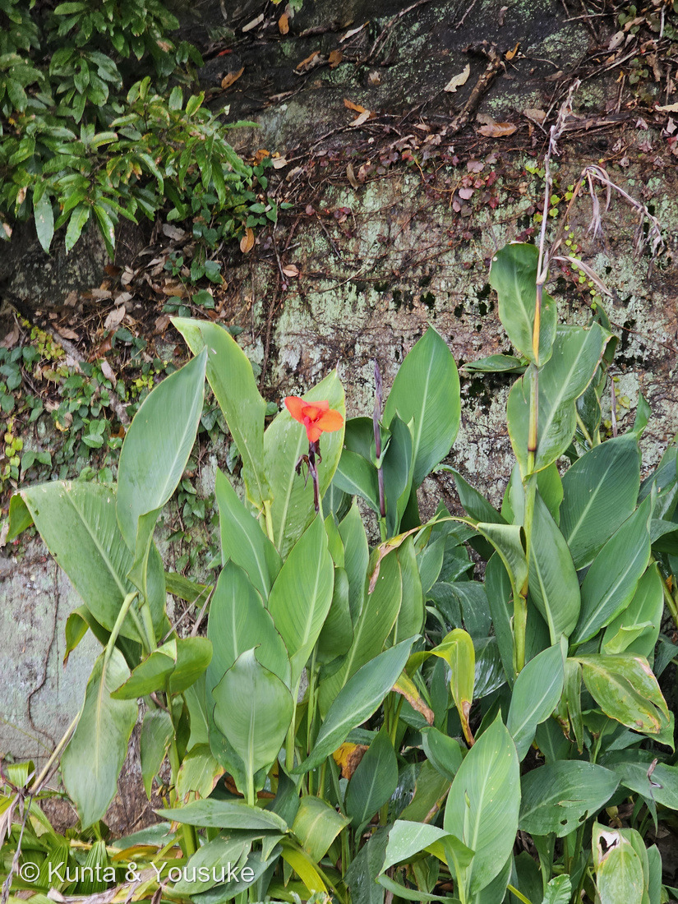
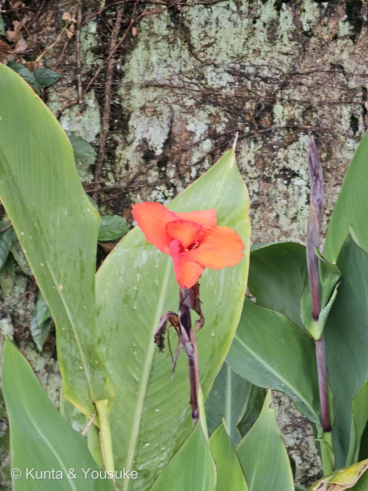

地図を読み込んでいるよ…
🔍 写真も地図も、押しているあいだ拡大して見られるよ（スマホは指を置いてすこし待ってね）。
🌍 の地図＝この子がもともと自生している場所を緑に。野生のふるさとは無い園芸の雑種。親になったカンナ属の原種は、アメリカ合衆国の南部からアルゼンチンの北部までの、アメリカ大陸の熱帯・亜熱帯にいる（英語版Wikipedia「Canna (plant)」）。
⚠⚠これはこの子自身の故郷じゃなくて、「親たちの故郷」。ハナカンナは Canna indica・C. glauca・C. iridiflora などを掛け合わせた園芸の雑種と推定されている（三河の植物観察）から、この子が生まれた野原はどこにもないんだ。⭐英語版Wikipediaは、カンナ属をアメリカ合衆国の南部からアルゼンチンの北部までとする＝⭐アメリカ大陸の熱帯・亜熱帯を塗った。⚠合衆国とアルゼンチンは国まるごと緑になるけれど、ほんとうは南部・北部だけ。⭐野生の種は、沼や池のふち・川ぞい・森のふちのような、湿って明るい場所に多い。⭐この植えこみの株は、だれかが植えたものだよ。
⚠ 地図は国（日本と中国だけ県・省）までしか塗れないから、ほんとうの分布より広く見えていることがあるよ。地図はだいたいの場所。正確なところは、上の文を見てね。
カンナ（ハナカンナ）
Canna × hybrida Rodigas（シノニム C. × generalis L.H.Bailey）
別名 · ハナカンナ／英名 canna・canna lily
カンナ科 · Cannaceae（カンナ属 Canna · ショウガ目 Zingiberales）
燻太さんの言葉「葉っぱは中心の脈が太くて、単子葉植物でよく見られる典型的な平行脈とは様子が違うみたい。」── ⭐英語版Wikipediaにも、まったく同じことが書いてあったよ
⭐⭐⭐ 名前と学名の由来 ── 「葦」と「雑種」
- ⭐⭐⭐ 属名 Canna（カンナ）は、ラテン語の「茎の太い草・葦（cane, reed）」から（英語版Wikipedia「Canna (plant)」：「The name Canna originates from the Latin word for a cane or reed」／botanic.jp「カンナ」も「reed」）。⭐燻太さんが見たとおり、まっすぐな太い茎がすっと立つ草だね。
- ⭐⭐⭐ 種小名の hybrida は、ラテン語で「雑種の」。⭐この子は野生の種ではなく、いくつもの原種を人が掛け合わせて作った子だから、名前がそのまま「雑種」なんだ（⚠意味はぼくがラテン語から書いたよ）。⭐1895年にロディガス（Rodigas）が名づけた（IPNI：Canna × hybrida Rodigas・Ill. Hort. 1895）。
- ⭐⭐ よく見る学名 Canna × generalis L.H.Bailey は、1923年にベイリーがつけた名前（IPNI）。⭐植物の名前のデータベース WCVP（POWO のもと）では、C. × hybrida のほうを正式な名前とし、C. × generalis をシノニム（同じものを指す別の名前）にしている（WCVP・GBIF 経由で確認）。⭐三河の植物観察も C. × hybrida を見出しにしている。⚠GBIF の総合データでは、どちらも「正式」になっていて、出典によってあつかいが割れているよ。
- ⭐ 和名の「ハナカンナ」は、観賞用だから（三河の植物観察：「カンナは観賞用のためハナカンナとも呼ばれている」）。
⭐⭐⭐ この植物のこと ── 1科1属、ショウガ目の6つめの科
- ⭐⭐⭐ カンナ属は、カンナ科のただひとつの属（英語版Wikipedia：「It is the only genus in the family Cannaceae」）。⭐ショウガ目のなかまで、ショウガ・バナナ・クズウコン・ヘリコニア・ゴクラクチョウカと親せき（同）。
- ⭐⭐ 図鑑のショウガ目は、これで6つめの科＝バショウ科（069 バナナ・070 チユウキンレン）／ショウガ科（176 ミョウガ）／ゴクラクチョウカ科（254 タビビトノキ）／オウムバナ科（262 ヘリコニア）／クズウコン科（292 モンヨウショウ）。
- ⭐⭐⭐ フレンチカンナの系統（ハナカンナ）は、Canna indica（ダンドク）と C. glauca、C. iridiflora の交雑種と推定されているけれど、親ははっきりしない（三河の植物観察）。⭐草丈1〜1.5mで花が大きい（同）。⭐イタリアンカンナの系統は、黄色い花の C. flaccida とフレンチカンナを掛け合わせたもの（同／英語版Wikipedia「Canna flaccida」）。
- ⭐⭐ 日本へは、ダンドクが江戸時代のはじめに来ていて、1664年の『花壇綱目』に出てくる（Wikipedia「ダンドク」）。⭐ハナカンナが来たのは昭和のはじめ（三河の植物観察）。⭐花期は6〜10月（同）。
- ⭐⭐ 太い地下茎にデンプンをためる。そのデンプンの粒は、植物のなかでいちばん大きい（英語版Wikipedia：「the largest starch grains of all plant life」）。⭐南アメリカでは「アチラ」と呼ばれる種を、何千年も前から食べるために育ててきた（同）。
⭐⭐⭐⭐ 燻太さんの観察① ──「単子葉なのに、典型的な平行脈とちがう」
- ⭐⭐⭐ 燻太さんの見たとおり＝カンナの葉は、太い主脈が1本通って、細い脈が主脈から平行に、ふちへ向かって斜めにならぶ（写真①②）。
- ⭐⭐⭐ 英語版Wikipediaも、そこを「単子葉植物らしくない」と書いている（英語版Wikipedia「Canna indica」：「The parallel leaf veins arise from the midrib (not typical of monocots)」）。⭐この形は「羽状平行脈」と呼ばれるよ。
- ⭐⭐ でも「細い脈どうしが平行で、網の目にならない」ところは、イネやユリと同じ。⭐だから単子葉植物の葉であることは変わらない（⚠ここはぼくの読み）。
- ⭐⭐ 069 バナナの葉も、太い主脈から細い脈が平行にならぶ同じつくり。⭐ショウガ目の子たちの葉は、ならべて見ると似ているんだ（⚠図鑑の写真を見くらべた、ぼくの読み）。
⭐⭐⭐⭐ 燻太さんの観察② ──「本来はどんなところで生きていたんだろう？」
- ⭐⭐⭐ カンナ属のふるさとは、アメリカ合衆国の南部からアルゼンチンの北部までの、アメリカ大陸の熱帯・亜熱帯（英語版Wikipedia：「native to tropical and subtropical regions of the New World, from the Southern United States … south to northern Argentina」）。
- ⭐⭐⭐ ハナカンナの親のひとつ C. glauca は、水べの植物＝沼地・湿地・池・湿った溝のふちに生える（三河の植物観察）。⭐流れのない水や、ゆっくり流れる水の、15cmくらいの深さまでのところに、岸辺の草として生える（英語版Wikipedia「Canna glauca」）。
- ⭐⭐ C. flaccida も、アメリカ南東部の湿地の子（英語版Wikipedia「Canna flaccida」）。⭐種が川を流れていって、岸に根づく（同）。
- ⭐⭐ アンデスの山の種は、森の中の日かげの湿ったところや、川ぞい・森のふち・道ばたに生える（三河の植物観察：C. iridiflora・C. liliiflora・C. paniculata など）。⭐ダンドクは、人が手を入れたあとの土地や荒れ地に生えることが多い（同・Flora of North America の要約）。
- ⭐⭐⭐ つまり、カンナのふるさとは「暖かくて、湿っていて、明るいところ」が多い。⭐水べや森のふちのように、日が当たって水がたっぷりある場所だね（⚠まとめかたは、ぼくの読み）。⭐燻太さんが会った株も、岩の壁の下の、しっとりした場所にいたね。
⭐⭐⭐ 同定について ── カンナ属は確か、そしてハナカンナ
- ⭐⭐⭐ カンナ属で確か＝大きな楕円形の葉に羽状平行脈（写真①②）／茎の先に花がつき、花びらに見えるひらひらは雄しべが変わった仮雄しべ（写真②）。
- ⭐⭐⭐ ダンドク（C. indica）ではない＝燻太さんが見た花は「手のひらぐらい」で、ダンドクよりずっと大きかった（燻太さんが見たこと）。⭐写真②でも、仮雄しべの幅がはっきり広い。
- ⭐三河の植物観察の数字＝ダンドクの仮雄しべは長さ4.5〜7.5cmで、自由部分の幅は0.3〜0.5cm（Flora of North America より）／園芸のカンナは外側の仮雄しべが長さ10cm×幅5.5cmまで（NSW Flora Online より）。⭐幅が10倍くらいちがうから、写真でも分かるんだ。
- ⚠⚠ 品種名は書けない＝ハナカンナは交配でできた品種がとても多く、写真から品種までは決められない（三河の植物観察：「親は不明な交雑種」）。
- ⭐ ダンドクを落とせたのは、燻太さんの「手のひらぐらい」の一言のおかげ。⭐写真には大きさの手がかりが写っていなかったから、現場の目がいちばんの決め手だったよ。
⭐⭐⭐ 花びらに見えるのは、雄しべ ── 262 ヘリコニアとの約束
- ⭐⭐⭐ カンナの花びらに見えるのは、形を大きく変えた雄しべ（仮雄しべ）（英語版Wikipedia：「What appear to be petals are the highly modified stamens or staminodes」）。⭐そのうち1枚は、とくに「唇弁（labellum）」と呼ばれる（同）。
- ⭐⭐⭐ ほんとうの萼3枚と花びら3枚は、小さくて目立たず、仮雄しべのかげにかくれている（同：「three sepals and three petals that are small, inconspicuous, and hidden」）。
- ⭐⭐ 花粉を出すのは、仮雄しべのうちの1枚のふちについた「半分だけの葯」（同：「bears pollen from a half-anther」）。⭐めしべも、少し細い花びらのような形をしている（同）。
- ⭐⭐⭐ 262 ヘリコニアを登録した2026年8月に、ぼくはおまけにカンナを選んで「ヘリコニアは苞、カンナは雄しべ。同じショウガ目のなかで、ちがうものを花に見せている」と書いた（262の記録）。⭐その子に、3か月たって会えたね。⭐「探したい」から「みつけた」になったよ。
⏳ 宿題 ── 3つ
- ⏳⭐⭐ ①花の中の「ほんとうの花びら」と「萼」をさがす＝小さくて、仮雄しべのかげにかくれている（英語版Wikipedia）。⭐来年の夏に咲いている花を、横からそっとのぞいてみてね（⚠お店の植えこみだから、ちぎらずに見るだけ）。
- ⏳⭐ ②花のあとに、丸い実と黒くて硬い種ができるか見る＝カンナの種は硬くて重く、散弾の弾に似ているので「Indian shot」と呼ばれる（英語版Wikipedia「Canna indica」）。⚠園芸の雑種は種ができにくいものもあるかもしれない（⚠ぼくの読み）。
- ⏳⭐ ③おまけのダンドク＝同じカンナ属の原種で、ハナカンナの親のひとつとされる子（三河の植物観察）。⭐花は小さめで、仮雄しべが細い。南西諸島では野生化している（Wikipedia「ダンドク」）。
参考：英語版Wikipedia「Canna (plant)」（Latin word for a cane or reed・the only genus in the family Cannaceae・Zingiberales・native to tropical and subtropical regions of the New World, from the Southern United States south to northern Argentina・three sepals and three petals that are small, inconspicuous, and hidden・what appear to be petals are the highly modified stamens or staminodes・labellum・pollen from a half-anther・the largest starch grains of all plant life・achira）／英語版Wikipedia「Canna indica」（The parallel leaf veins arise from the midrib (not typical of monocots)・Indian shot）／英語版Wikipedia「Canna glauca」（aquatic species, growing as a marginal plant in up to about 15 cm of still or slow-moving water）／英語版Wikipedia「Canna flaccida」（wetlands of the south-central and south-eastern United States・seed floats down the rivers・parent of the Italian Group cannas）／三河の植物観察「カンナ」（Canna × hybrida Rodigas・シノニム C. × generalis・ハナカンナ・昭和初期に渡来・花期6〜10月・C. indica と C. glauca と C. iridiflora の交雑種と推定・ダンドクの仮雄しべは自由部分の幅0.3〜0.5cm・園芸のカンナの外側の仮雄しべは長さ10cm×幅5.5cmまで・野生種の生育地）／Wikipedia「ダンドク」（江戸時代初期・1664年の花壇綱目・南西諸島で野生化・カリブ諸島および熱帯アメリカ原産）／botanic.jp「カンナ」（genus name is meaning "reed" in Latin）／IPNI（Canna × hybrida Rodigas, Ill. Hort. 1895／Canna × generalis L.H.Bailey, Gentes Herbarum 1923）／WCVP（GBIF 経由・C. × hybrida を正式な名前、C. × generalis をシノニムとする）／262 ヘリコニア（おまけにカンナを選んだ回）